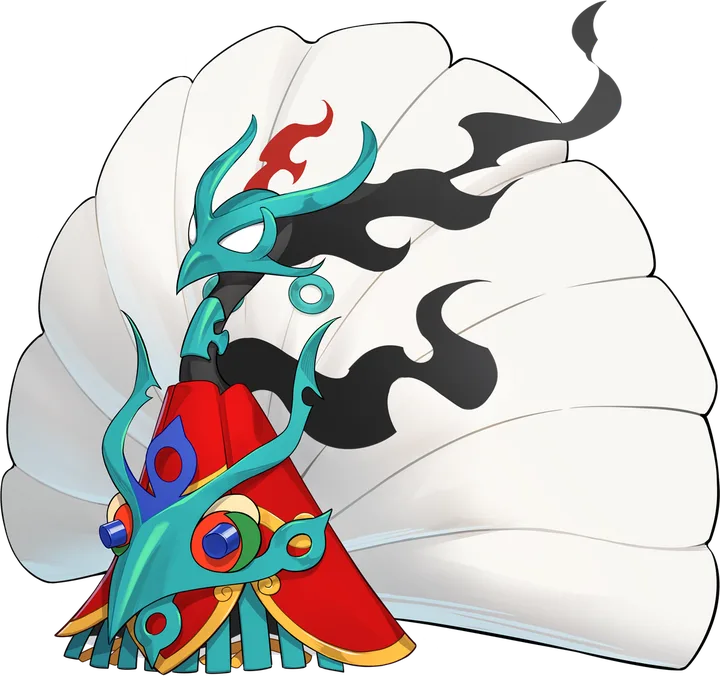

怪物官方原文 ↗铜盏孔雀姬梦枫心里的偏执在凤凰失控的力量下投影到实体世界的样貌。编号1046地图园林中庭 <!--数值（攻击 / 防御 / 生命）难度攻击防御生命星币普通524018困难534518噩梦645018疯狂745518技能主动技能｜斗艳（冷却 3）：指定场上生命值最高的一个角色与自身施加孔雀开屏。被动技能｜百鸟之姿：回合结束时，恢复2点生命值。机制1. 会主动攻击。 2. 可以反击。机制标签主动攻击,会反击相关内容园林中庭地图星趴怪物图鉴图鉴Z3000角色